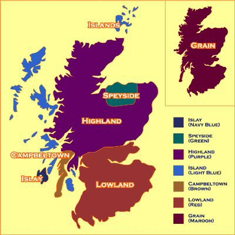
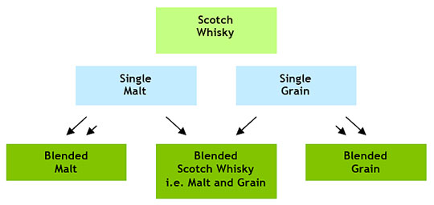

Scotch Whisky – Скоч, Шотландско уиски
 Понятието “Скоч уиски” или както разговорно се казва само “скоч” има точно определение в Обединеното кралство. Според последната редакция на регулационните закони за шотландско уиски от 2009 г., това означава: - Да е произведено в Шотландия от малциран ечемик (виж “малц”), към който могат да бъдат добавяни само цели зърна от други сортове. В регулацията има упоменати изисквания за превръщането на малца в каша в съответната дестилационна и ферментирането й само с добавка на мая. - Да бъде дестилирано с алкохолен градус не повече от 94,8%, за да може дестилатът да има аромат и вкус от използваната суровина и метода на производство. Този градус обаче е твърде широко изискване, заради вида уиски blended (блендед). Колкото по-нисък е градусът на дестилата, толкова повече аромати и вкусови качества има той. За малцово уиски (Single Malt) дестилатите излизат от казаните с около 70% алкохол. - Да е отлежало в Шотландия в дъбови бъчви с вместимост не по-голяма от 700 л в продължение най-малко на 3 години. - Да носи цвета, аромата и вкуса от използваните суровини, и метода на производство, отлежаването, като не може да се добавя никаква друга субстанция освен вода и оцветяване с обикновен карамел. Това са общите условия за скоч уиски, а за различните видове (виж Malt и Single Malt) има допълнителни изисквания. Виж тук Scotch Whisky Regulations (SWR)